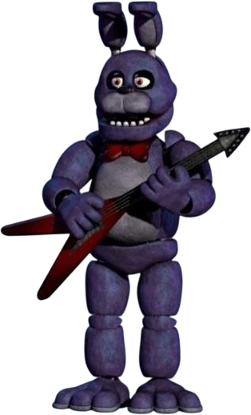
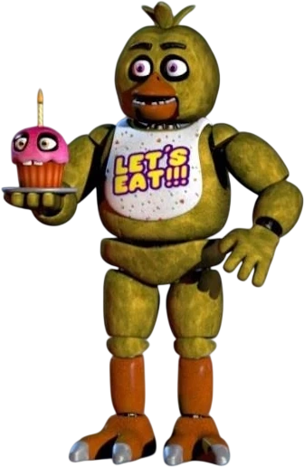
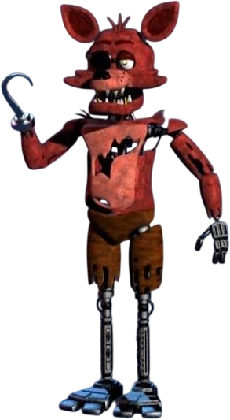

เนื้อเรื่อง
AftonและEmily หุ้นส่วนทางธุรกิจที่เปิดร้านอาหาร Fredbear’s Family Diner ซึ่งเป็นร้านอาหารเพื่อความบันเทิงสำหรับเด็กรูปแบบใหม่ ที่โดดเด่นด้วยหุ่นยนต์ร้องเพลง
โครงการที่พวกเขาทุ่มเทอย่างเต็มที่นี้ทำให้เราได้รู้จักกับสองตัวละครที่เป็นสัญลักษณ์ของแฟรนไชส์ ได้แก่ yellow Fredbearและyellow Bonnie the Bunnyสิ่งที่ทำให้ร้านอาหารของพวกเขาแตกต่างจากคู่แข่งคือสิ่งประดิษฐ์ปฏิวัติวงการของ Afton: “Springlock Suits” ต่างจากมาสคอตทั่วไปที่ใช้คนสวมชุดราคาถูก ชุดเหล่านี้เป็นเครื่องจักรที่ใช้งานได้สองวัตถุประสงค์ โดยใช้มือหมุนเพื่อหมุนชิ้นส่วนโครงกระดูกภายในแบบ animatronic กลับเข้าไปในผนังด้านในของชุด
ทำให้คนสามารถสวมเข้าไปและแสดงได้ วิสัยทัศน์ของ Afton สำหรับชุดเหล่านี้คือการทำให้ความฝันของเด็กๆ เป็นจริงและทำให้ animatronic ดูสมจริงที่สุดเท่าที่จะเป็นไปได้เหล่าชายทั้งสองจะสวมชุดมาสคอตเพื่อสร้างความบันเทิงให้กับเด็กๆ Emily จะสวมชุดมาสคอตหมีสีทองชื่อ Fredbear ซึ่งต่อมาเป็นที่รู้จักในแฟรนไชส์ว่า “Golden Freddy” ในขณะที่ Afton จะสวมชุดมาสคอตตัวที่สอง คือชุดกระต่ายสีทอง
ซึ่งต่อมาเป็นที่รู้จักในแฟรนไชส์ว่า “Spring Bonnie” ผมคาดเดาว่าความทุ่มเทของพวกเขาต่อโครงการนี้อาจมาจากค่านิยมที่เน้นครอบครัวเป็นหลัก Afton มีลูกสามคน คือ Elizabeth, Michael และ “Crying Child” ส่วน Emily มีลูกสาวหนึ่งคน คือ Charlotteเมื่อธุรกิจเติบโตขึ้น แอฟตันและเอมิลี่จึงขยายกิจการและเปิด "Fazbear Entertainment" ซึ่งเป็นเครือร้านอาหาร Freddy Fazbear's Pizza จำนวนมาสคอตก็เพิ่มขึ้นเช่นกัน และต่อมาก็มีตัวละครที่เราคุ้นเคยและชื่นชอบ ได้แก่ ฟ็อกซี่โจรสลัด ชิก้าไก่ และบอนนี่กระต่ายเวอร์ชั่นใหม่ ในช่วงเวลานี้ เอมิลี่ได้สร้างแอนิเมโทรนิกส์ใหม่ๆ
เช่น ตุ๊กตาเฟรดแบร์ที่มีกล้องซ่อนอยู่ข้างใน (ของขวัญสำหรับลูกชายของเขา) และสาขา "Funtime Animatronics" ธุรกิจกำลังเฟื่องฟู และดูเหมือนว่าจะไม่มีอะไรผิดพลาดได้เลย... จนกระทั่ง... เหตุการณ์ The Bite of 1983
เนื้อเรื่องตัวละคร

Bonnie the Rabbit ดอะ แรบบิท เป็นหนึ่งในหุ่นยนต์แอนิเมโทรนิกส์ดั้งเดิมสี่ตัวของร้านพิซซ่าเฟรดดี้ ฟาซแบร์ และเป็นตัวร้ายหลักในซีรีส์เกม Five Nights at Freddy's Bonnie เป็นหุ่นยนต์กระต่ายและเป็นมือกีตาร์ในวงดนตรีของเฟรดดี้ ตั้งอยู่ทางด้านซ้ายของเวที โดยที่บริษัท Fazbear Entertainment, Inc. และสาธารณชนไม่รู้ มีการบอกเป็นนัยๆ ว่าบอนนี่ถูกวิญญาณที่ไม่สงบของ Jeremy เด็กชายที่ถูก William Afton ฆาตกรรม ด้วยเหตุนี้ เขาและหุ่นยนต์ตัวอื่นๆ จึงออกตามล่าล้างแค้นฆาตกรด้วยการโจมตีผู้ใหญ่ในร้านพิซซ่าหลังเวลาทำการด้วยความโกรธแค้นอย่างบ้าคลั่ง

Freddy Fazbear คือตัวร้ายหลักของซีรีส์เกม Five Nights at Freddy's และเป็นตัวละครหลักในบรรดาหุ่นยนต์แอนิเมโทรนิกส์ดั้งเดิมทั้งสี่ตัวของร้าน Freddy Fazbear's Pizza เฟรดดี้เป็นหุ่นยนต์หมีและเป็นจุดดึงดูดหลักของร้าน Freddy Fazbear's Pizza สาขาแรกที่เปิดในปี 1983 รวมถึงเป็นสัญลักษณ์และชื่อของบริษัทที่เป็นเจ้าของร้าน – Fazbear Entertainment เฟรดดี้รับบทเป็นนักร้องนำและนักแสดงหลักของวงดนตรี โดยยืนอยู่ตรงกลางเวที โดยที่ Fazbear Entertainment และสาธารณชนไม่รู้ เฟรดดี้ถูกวิญญาณที่ไม่สงบของ Gabrie – เด็กชายที่ถูก William Afton ฆาตกรรม – เข้าสิงอยู่ ด้วยเหตุนี้ เฟรดดี้และเพื่อนร่วมวงที่ถูกวิญญาณเข้าสิงเช่นกัน จึงกำลังแก้แค้นฆาตกรของพวกเขาโดยการโจมตีผู้ใหญ่ที่มีลักษณะคล้ายกันในร้านพิซซ่าหลังเวลาทำการด้วยความโกรธแค้น โดยไม่รู้ว่าเด็กเหล่านั้นกำลังถูก William Afton บงการอยู่ อย่างไรก็ตาม เฟรดดี้เป็นมิตรกับเด็ก ๆ อย่างเห็นได้ชัด และพยายามช่วยชีวิตตัวเองและเพื่อน ๆ รวมถึงเด็กคนอื่น ๆ ที่ตกเป็นเป้าหมายของ William Afton ด้วย

Chica the Chicken หรือที่รู้จักกันในชื่อ Chica เป็นหนึ่งในหุ่นยนต์แอนิเมโทรนิกส์ดั้งเดิมสี่ตัวของร้านพิซซ่าเฟรดดี้ ฟาซแบร์ และเป็นตัวร้ายหลักในซีรีส์เกม Five Nights at Freddy's Chica เป็นหุ่นยนต์ไก่และเป็นนักร้องประสานเสียงในวงดนตรีของ Freddy's โดยประจำอยู่ที่ด้านขวาของเวที โดยที่บริษัท Fazbear Entertainment, Inc. และสาธารณชนไม่ได้เปิดเผยเรื่องนี้ ชิกาถูกสิงโดยวิญญาณที่ไม่สงบของ Susie เด็กหญิงตัวน้อยที่ ถูกWilliam Afton ฆาตกรรม ด้วยเหตุนี้ เธอและหุ่นยนต์ตัวอื่นๆ จึงกำลังแก้แค้นฆาตกรของพวกเธอโดยการโจมตีผู้ใหญ่ในร้านพิซซ่าหลังเวลาทำการด้วยความโกรธแค้นอย่างบ้าคลั่ง

Foxy the Pirate หรือที่รู้จักกันในชื่อ Foxy เป็นหนึ่งในหุ่นยนต์แอนิเมโทรนิกส์ดั้งเดิมสี่ตัวของร้าน Freddy Fazbear's Pizza และเป็นตัวร้ายหลักในซีรีส์เกม Five Nights at Freddy's ฟ็อกซี่เป็นหุ่นยนต์แอนิเมโทรนิกส์รูปสุนัขจิ้งจอกโจรสลัดที่เลิกผลิตไปแล้ว เขาอาศัยอยู่บนเวทีแยกต่างหากในร้านพิซซ่า โดยที่บริษัท Fazbear Entertainment, Inc. และสาธารณชนไม่ได้เปิดเผย Foxy ถูกสิงโดยวิญญาณที่ไม่สงบของ Fritz เด็กชายที่ถูก William Afton ฆาตกรรม ด้วยเหตุนี้ เขาและหุ่นยนต์ตัวอื่นๆ จึงกำลังแก้แค้นฆาตกรของพวกเขาโดยการโจมตีผู้ใหญ่ในร้านพิซซ่าหลังเวลาทำการด้วยความโกรธแค้นอย่างบ้าคลั่ง